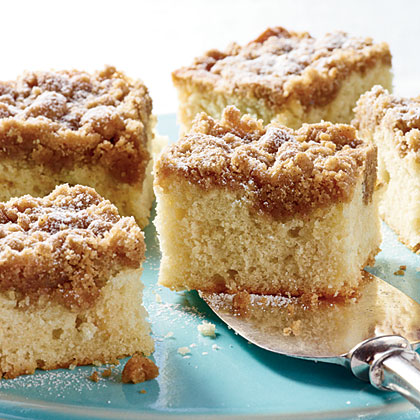

Buttermilk Coffee Cake

Description
This buttermilk crumb cake is a
breakfast favorite when guests arrive.
To make one day ahead: just bake, cool
completely, and cover pan tightly in
aluminum foil. For an even more
decadent treat, make this delicious
glaze to drizzle over the cooled
cake: Combine 1/2 cup powdered sugar,
3 teaspoons milk, and 1/2 teaspoon
vanilla in a small bowl; and stir
until smooth.
Ingredients
Cake:
- 1 cup unsalted butter
- 1 cup granulated sugar
- 2 eggs
- 2 cups all-purpose flour
- 1 teaspoon baking soda
- 1 teaspoon baking powder
- ½ teaspoon table salt
- 1 teaspoon vanilla extract
- 1 cup buttermilk
Streusel Topping:
- ⅓ cup brown sugar
- ⅓ cup white sugar
- 1 teaspoon cinnamon
- 1 cup walnuts (or pecans), coarsely chopped
Steps
-
Preheat oven to 325°F.
-
Stir together Streusel Topping
ingredients (brown sugar, 1/3 cup
granulated sugar, cinnamon, and
chopped nuts) in a small bowl until
combined. Set aside.
-
Cream butter and sugar at medium
speed with an electric mixer until
light and fluffy. Add eggs, 1 at a
time, beating just until yellow
disappears.
-
Sift together flour and next 3
ingredients; add to butter mixture
alternately with buttermilk,
beginning and ending with flour
mixture. Beat at low speed just
until blended after each addition.
Stir in vanilla. Pour batter into a
greased 9- x 13-inch pan; sprinkle
with Streusel Topping. Repeat and
sprinkle remaining Streusel Topping.
-
Bake at 325°F for 35-40 minutes or
until a wooden pick inserted in
center comes out clean. Let cool 20
minutes before serving.